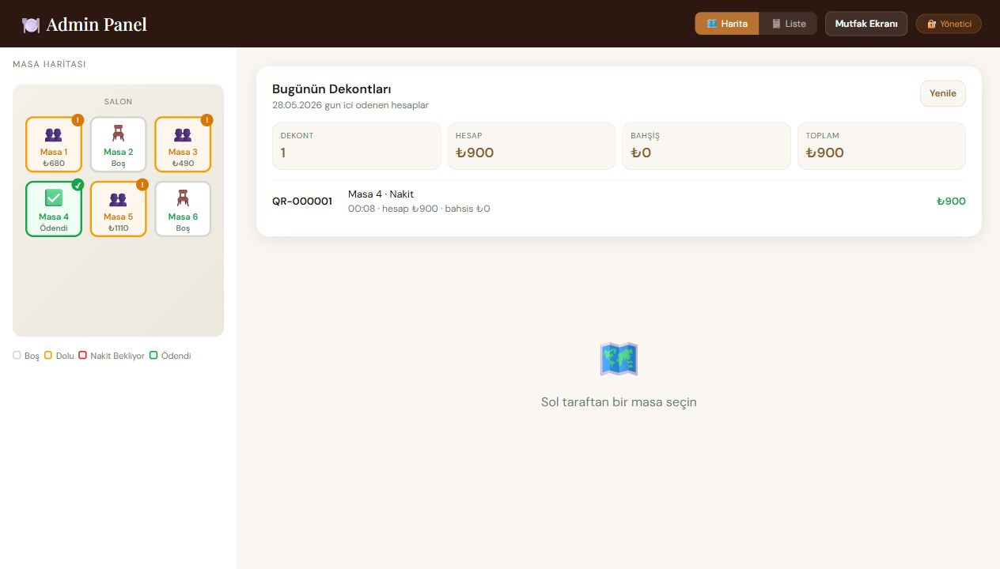
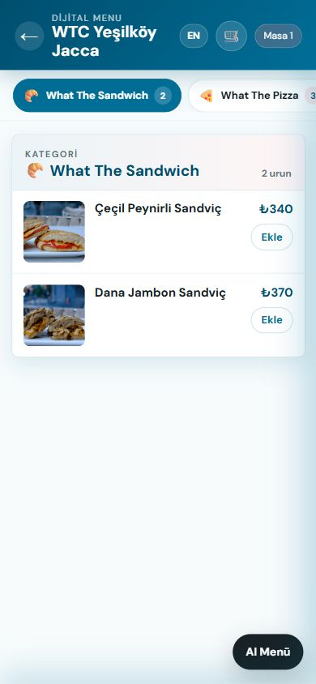

1
QR okutulur
Müşteri masaya özel QR kodu okutur, menüyü ve adisyonu telefonundan görür.
Pilot restoranlar için hazır QR deneyimi
Restoran ve kafeler için QR menü, dijital adisyon, masadan ödeme, bahşiş ve canlı masa takibini tek akışta birleştiren modern ödeme sistemi.


QR Resto, garsonu devreden çıkarmak yerine tekrar eden hesap alma işlemlerini azaltır ve ekibin servis kalitesine odaklanmasını sağlar.
Müşteri masaya özel QR kodu okutur, menüyü ve adisyonu telefonundan görür.
Ürün bazlı hesaplama yardımı, elle tutar girişi ve bahşiş aynı ekranda çalışır.
Nakit, kart veya yemek kartı akışları restorana ait hesap üzerinden yönetilir.
QR Resto yalnızca QR menü değildir; ödeme, sipariş ve masa durumunu aynı operasyon ekranında birleştiren uçtan uca restoran deneyimidir.
Misafir deneyimi
Misafir menüyü inceler, ürünleri seçer, hesabı böler ve ödemek istediği tutarı masadan ayrılmadan tamamlar.
Servis ve mutfak
Ürün notları, masa numarası ve ödeme durumu ayrı ayrı sorulmadan takip edilir; servis ekibi neyin beklediğini anında görür.
Yönetim ekranı
Gün içi ödemeler, kısmi tahsilatlar, bahşişler ve masa kapanışları geriye dönük kontrol edilebilir kayıtlarla izlenir.
Odak, restoran sahibinin her gün gördüğü problemlerde: masa dönüşü, adisyon takibi, bahşiş, nakit onayı ve mutfakla koordinasyon.
Admin paneli masaları, açık hesapları ve ödeme durumlarını tek ekranda gösterir.
Sepet, mutfak bildirimi ve sipariş durumları tablet ekranına uyumlu akar.
Müşteri kendi ödemek istediği tutarı ve bahşişi elle belirleyebilir.
Menüye hakim asistan, kararsız müşterilere hafif, doyurucu veya tatlı önerileri sunar.
QR Resto, pazaryeri veya sanal POS altyapısı ile çalışacak şekilde tasarlanır. Müşteriden alınan ödeme resmi ödeme kuruluşunun akışı içinde restorana iletilir; platform komisyonu ayrıca tanımlanabilir.
QR Resto deneyimi misafir, servis ekibi ve işletmeci için ayrı ayrı değer üretir; her rol kendi ekranında yalnızca ihtiyaç duyduğu bilgiyi görür.
QR okutulduktan sonra ürün seçimi, hesap bölme, bahşiş ve ödeme aynı mobil deneyimde tamamlanır.
Masa bazlı durumlar ve müşteri notları panelde görünür; ekip daha çok servis kalitesine odaklanır.
Ödeme kayıtları, masa kapanışları ve dekontlar daha kontrollü bir operasyon hafızası oluşturur.
Pilot kurulum
QR Resto, ilk pilot kafelerde gerçek operasyon verisiyle geliştiriliyor. Kısa bir demo ile masa akışını, admin panelini ve ödeme modelini görebilirsiniz.
Doğrudan iletişim
Demo talebi, pilot kurulum ve iş birliği görüşmeleri için doğrudan bize ulaşabilirsiniz.
demo@qrresto.com.tr